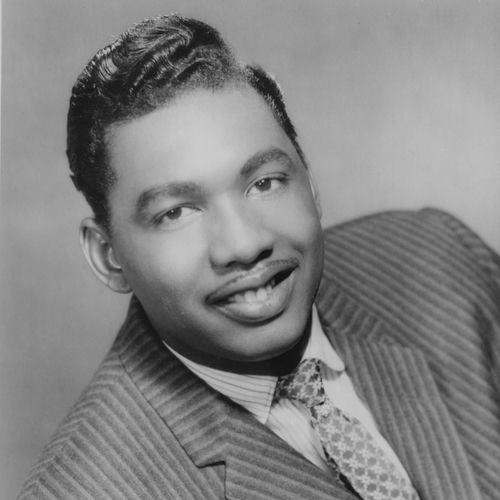

Earl Gaines
Earl Gaines Jr. was an American soul blues and electric blues singer. Born in Decatur, Alabama, he sang lead vocals on the hit single "It's Love Baby ", credited to Louis Brooks and his Hi-Toppers, before undertaking a low-key solo career. In the latter capacity, he had minor success with "The Best of Luck to You" (1966) and "Hymn Number 5" (1973). Noted as the best R&B singer from Nashville, Gaines was also known for his lengthy career.
Complete Discography & Tracklists (16)
1965 Tell Me Tonight / Three Wishes 🎵 2 Tracks
1972 Lovin' Her Was Easier (Than Anything I'll Ever Do Again) 🎵 2 Tracks
1972 Keep Your Mind on Me / That's How Strong My Love Is 🎵 2 Tracks
1973 Turn on Your Love Light / You're the One 🎵 2 Tracks
1973 Soul Children / I Can't Face It 🎵 2 Tracks
1973 Hymn Number 5 / If You Want What I Got 🎵 0 Tracks
No tracks registered.